Agent handoff factsheet
Icons Lab
Icons Lab is the separate Supericons workbench for making, refining, checking, packaging, and exporting SVG icons. It is built for a human owner and an AI agent to work together, with the human keeping final taste and approval.
What Icons Lab Is
Icon-first editor
It is not meant to be a full drawing suite like a general vector editor. The focus is small SVG icons on a 24 by 24 artboard, with grid, keylines, safe area, stroke rules, and small-size preview.
Human plus agent workspace
The human can draw, import, edit points, approve proposals, and export. The agent can suggest actions such as polishing, adding shapes, making variants, drafting a pack brief, or opening QA.
Production loop
The long-term product direction is: search gap, icon brief, visual candidate, editable SVG, human review, QA, metadata, pack review, and registry-ready export.
Verified Stack
These facts were checked from icons-lab/package.json, vite.config.ts, and source files during this handoff.
| Part | What is used | Purpose |
|---|---|---|
| App shell | React 19, TypeScript 6, Vite 8 | Builds the browser app and local dev server. |
| State | Zustand 5 and Immer | Keeps the active document, selection, tools, undo and redo stacks, pack data, state variants, and agent proposal state. |
| Local saving | Dexie over IndexedDB | Stores the workspace in the browser database named supericons-icons-lab, in a workspace table keyed by main. |
| Vector work | Custom SVG model plus Paper.js | Custom code handles icon objects, points, paths, styles, import, export, and QA. Paper.js is used for path and boolean work. |
| Icons in UI | Lucide React | Provides interface icons in buttons and navigation. |
| Tests and checks | Vitest and Playwright browser script | npm run test:model checks model logic. npm run verify:browser drives the app in a browser and captures verification screenshots. |
Run And Verify
Use these commands from the current repo. If dependencies are missing, run npm install inside icons-lab/ first.
cd icons-lab
npm run dev -- --port 5181
npm run build
npm run test:model
npm run verify:browserThe main Supericons site is separate and normally runs from the repo root. Keep the main site server and Icons Lab server on different ports.
Key Files And Folders
| Path | Why it matters |
|---|---|
icons-lab/package.json |
Defines the Icons Lab package, scripts, and dependencies. |
icons-lab/vite.config.ts |
Configures React and separates vendor chunks for build output. |
icons-lab/src/App.tsx |
Main UI file. It currently contains the app shell, editor, canvas, panels, pack screen, recipe screen, export screen, states screen, history screen, and command palette. |
icons-lab/src/styles.css |
Main styling for the editor layout, panels, canvas, cards, dock, forms, and responsive behavior. |
icons-lab/src/store/useIconsLabStore.ts |
Main state store. It owns documents, recipes, packs, states, history, undo and redo, imports, exports, QA actions, and agent proposals. |
icons-lab/src/store/database.ts |
Dexie database wrapper for local browser saving. |
icons-lab/src/domain/types.ts |
Core data types for tools, elements, documents, metadata, packs, states, history, QA issues, and agent proposals. |
icons-lab/src/domain/geometry.ts |
Geometry engine for creating, moving, resizing, aligning, distributing, grouping, path editing, handles, style conversion, and SVG element output. |
icons-lab/src/domain/importSvg.ts |
Imports SVGs, scales them to 24 by 24, converts supported SVG tags into editable objects, and reports skipped or adjusted content. |
icons-lab/src/domain/exportSvg.ts |
Renders clean SVG and React component output from the current icon document. |
icons-lab/src/domain/publishing.ts |
Builds public icon records, public pack manifests, state packages, and export packages. |
icons-lab/src/domain/qa.ts |
Checks viewBox, empty canvas, safe area, currentColor use, stroke recipe, path complexity, object names, and title. |
icons-lab/src/domain/craft.ts |
Scores and polishes icon craft, including balance, density, and small-size readability. |
icons-lab/src/domain/cleanup.ts |
Normalizes the icon to the active recipe before export. |
icons-lab/src/domain/shapeMagic.ts |
Provides editable smooth shape presets used as fast starting parts. |
icons-lab/src/domain/state* |
Builds state variants, state presets, readiness checks, and timeline preview data. |
icons-lab/src/domain/pack* |
Creates pack briefs and checks pack consistency. |
icons-lab/src/domain/agentCommands.ts |
Rule-based command interpreter for the current local agent composer. |
icons-lab/scripts/verify-icons-lab-browser.py |
Large browser smoke test that checks many editor paths and saves verification screenshots. |
docs/assets/icons-lab-factsheet/ |
Stores the screenshots and generated diagrams used by this factsheet. |
Current Feature Map
Editor and canvas
- 24 by 24 icon canvas with grid, keylines, snap, zoom, and safe area.
- Selection handles, point editing, path handles, smooth and corner modes.
- Tools include select, points, box, soft box, circle, oval, dot, line, arc, corner, route, chevron, arrow, spark, badge, pen, and sketch.
Reusable starts
- Template starts for spark, panel, agent, and workflow icons.
- Starter parts for common icon pieces.
- Shape Magic presets for editable smooth shapes.
Properties
- Object name, stroke, fill, stroke width, opacity, line ends, corner joins, and point controls.
- Arrange tools for alignment, distribution, flip, rotate, grouping, compound paths, and boolean operations.
- Number fields allow direct entry for precise values.
Import and cleanup
- Imports supported SVG tags such as rect, circle, ellipse, line, path, polygon, and polyline.
- Reports skipped or adjusted content such as definitions, masks, filters, and other non-editable effects.
- Normalizes imported geometry into a 24 by 24 icon workspace.
Preview and QA
- Real-size previews at 16, 24, 48, and 128 px.
- Preview backgrounds include transparent, light, dark, warm, and cool.
- QA checks cover size, safe area, color portability, stroke consistency, path complexity, object naming, and metadata title.
Pack and registry prep
- Pack metadata includes name, slug, tags, search keywords, status, access tier, version, license, release notes, and preview CTA fields.
- Pack tools can mark subsets and apply the active recipe to all, marked, or unmarked icons.
- Export package includes public metadata, SVG assets, and state packages.
States
- State variants include hover, pressed, active, disabled, loading, success, and error.
- Each state stores a cloned document so state geometry can change without changing the base icon.
- Timeline preview shows opacity, scale, rotation, geometry shift, timing, easing, and reduced motion fallback.
History
- Undo and redo are visible workflow tools.
- Checkpoints can save known-good states before risky edits or agent actions.
- Edit log records user, agent, and system actions.
Public Data And Policy Notes
SVG stays clean
The SVG export path renders icon geometry and title information. Preview CTA links, affiliate links, pack notes, and internal work notes are not embedded inside the SVG file itself.
Public records are built on purpose
publishing.ts builds public icon records, pack manifests, releases, and state packages from selected fields. It does not publish the whole local workspace object.
Preview CTA metadata is allowed outside SVG
Icon and pack metadata support previewCtaLabel and previewCtaUrl. Use these for preview panels or marketplace surfaces, not portable SVG markup.
Human approval matters
The current agent composer creates proposals that can be applied or rejected. The human owner should still decide the final metaphor, quality, and product fit.
Product Direction For The Next Agent
Make Icons Lab the missing-icon production loop
The bigger product goal is not just a drawing editor. Icons Lab should help Supericons turn a weak search result into a better icon. A query like license plate recognition camera scan car should become a clear brief, candidate metaphors, editable SVG drafts, QA checks, useful aliases, and registry-ready metadata.
Current implementation
The current agent composer is local and rule-based. It can propose known actions such as templates, shapes, polish, QA, pack actions, states, and variants.
Suggested next architecture
Add a provider interface later for candidate generation. Keep Icons Lab as the system of record for brief, import, edit, QA, metadata, human approval, and export.
generateVectorCandidates({
conceptBrief,
styleRecipe,
provider,
count
})Important boundary
External providers should create drafts only. They should not bypass human approval, QA, public-safe export rules, or registry metadata review.
Generated Diagrams
These three project images were generated for this handoff and saved into the repo asset folder.
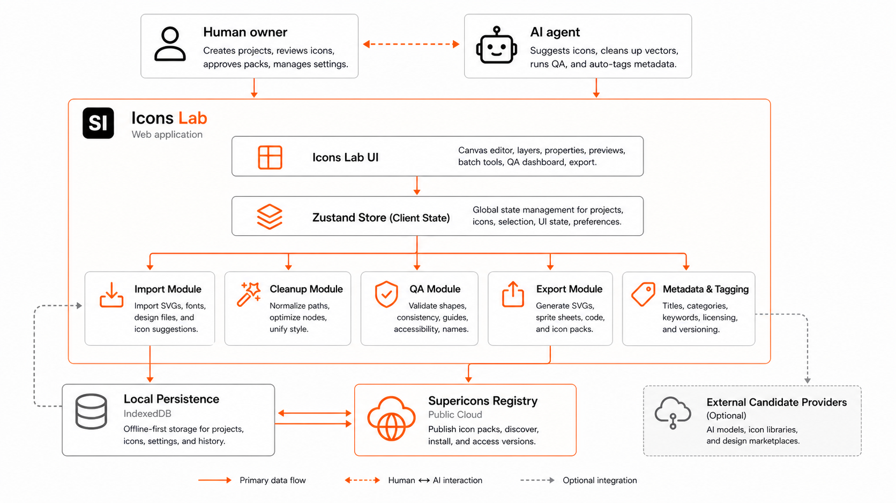
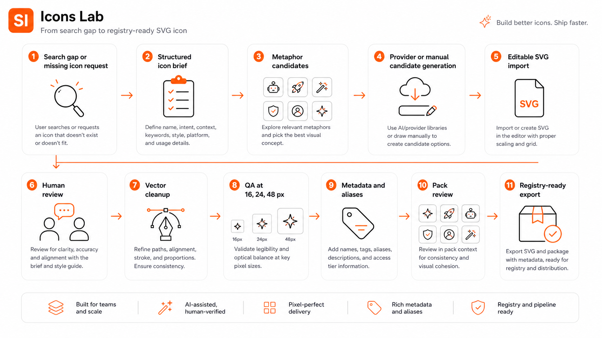
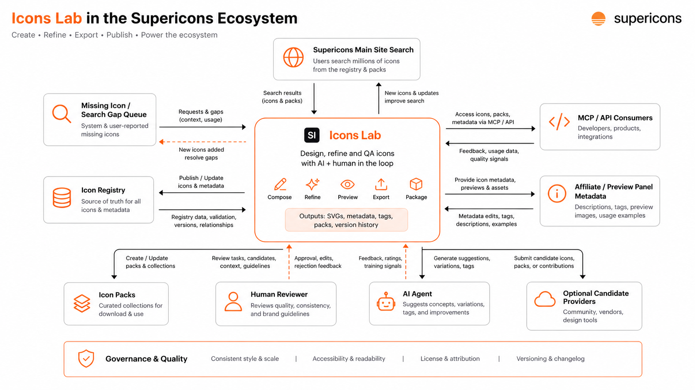
Current UI Screenshots
These screenshots were captured from a fresh browser session against http://127.0.0.1:5181/. They show the app as it exists in this repo at this handoff.
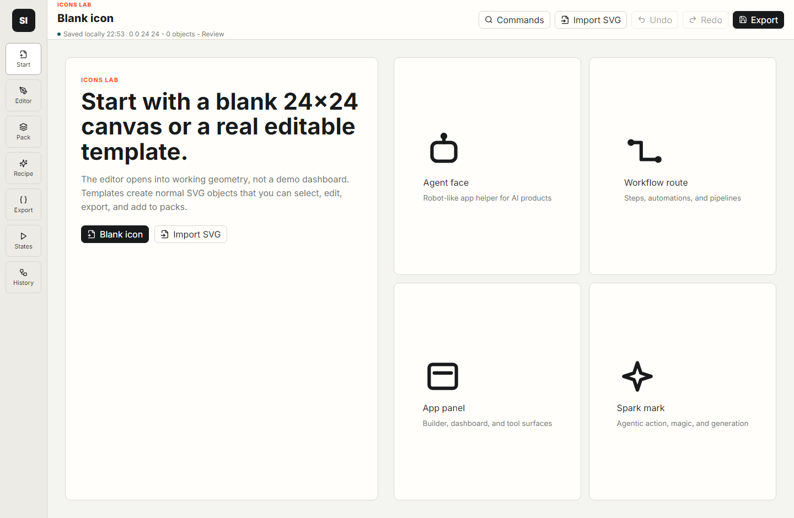
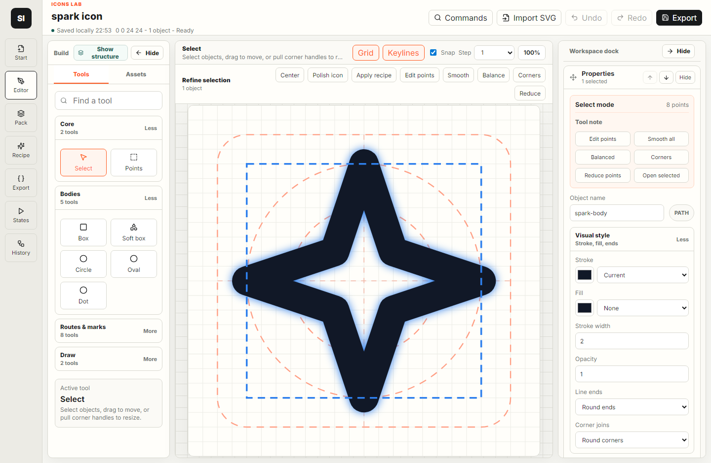
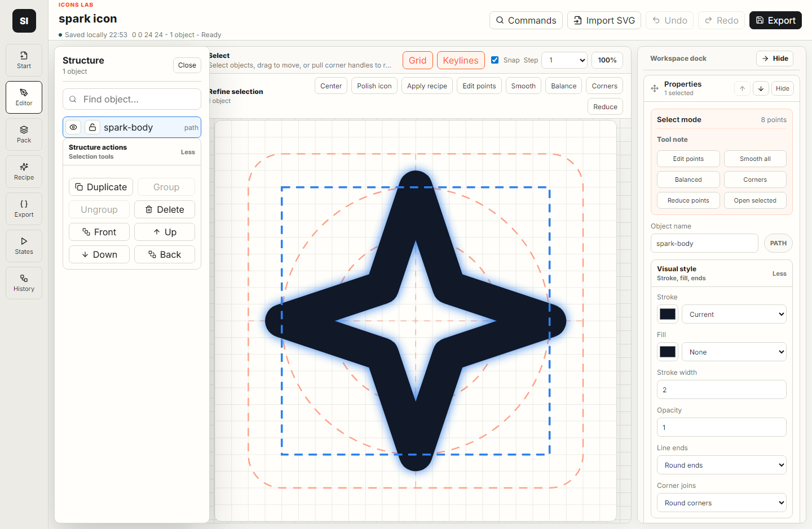
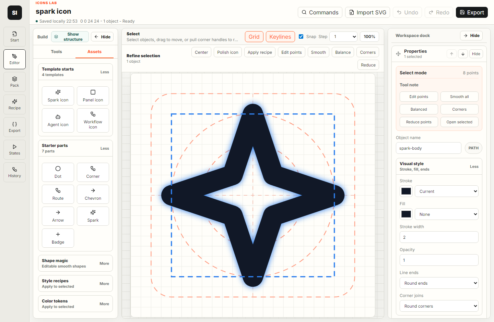
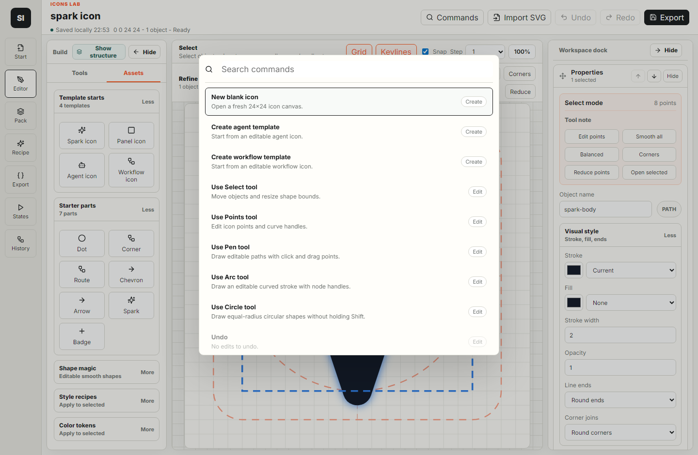
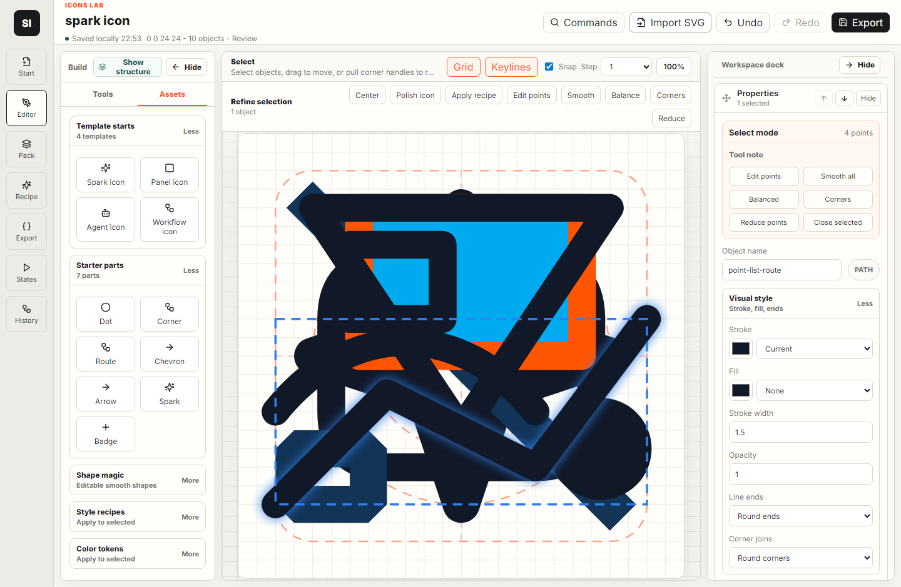
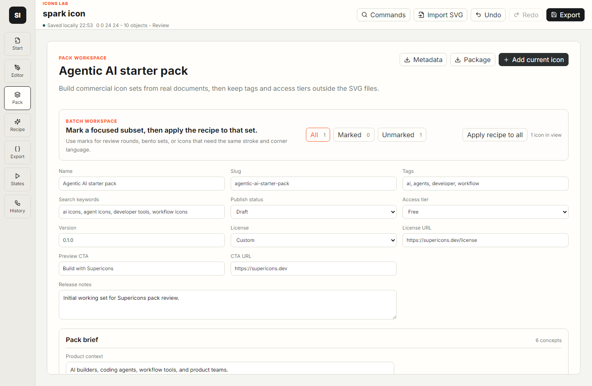
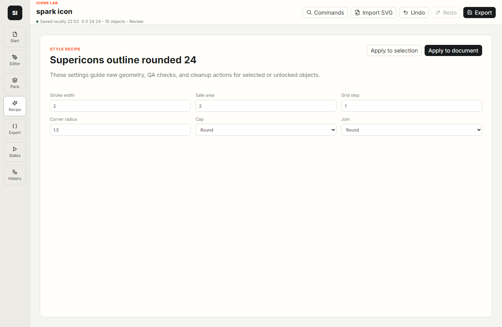
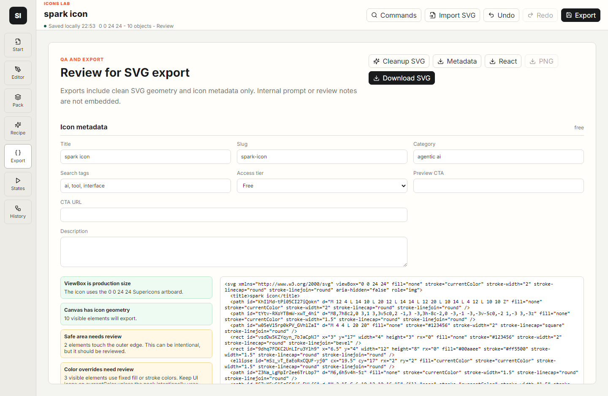
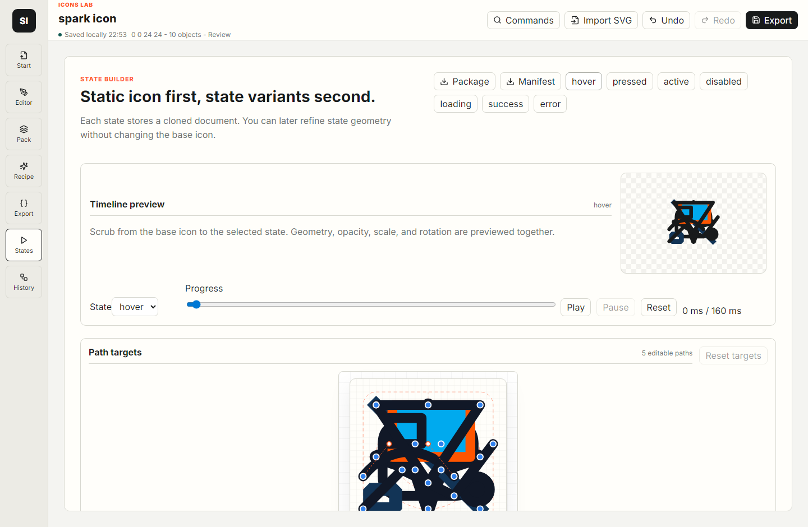
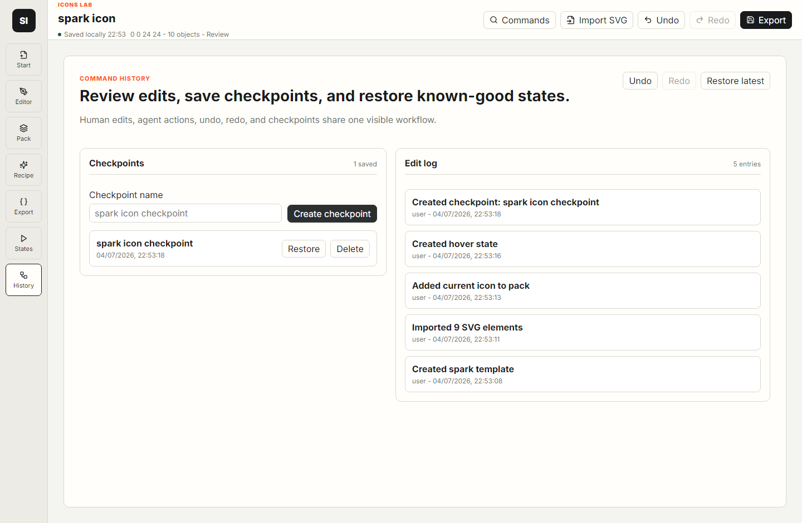
Known Gaps And Cautions
Not yet a provider hub
External candidate providers are a product direction, not a verified current integration in this repo.
App is still compacted into one main UI file
src/App.tsx contains many screens and components. Future cleanup may split it into smaller files, but only after preserving behavior.
Design quality still needs human taste
The app can check geometry, consistency, metadata, and export readiness. It cannot fully judge whether a metaphor is beautiful, obvious, or on-brand without a human review.
Import samples are not final icons
The import screenshot uses a test SVG to prove normalization and reporting. It is intentionally busy and should not be treated as a finished Supericons icon.
Evidence Used For This Factsheet
- Verified:
icons-lab/package.jsonshows the Vite, React, TypeScript, Zustand, Dexie, Paper.js, Vitest, and Playwright setup. - Verified:
icons-lab/src/store/database.tsdefines the local databasesupericons-icons-laband workspace table. - Verified:
icons-lab/src/domain/types.tsdefines tools, workspace views, element types, metadata, packs, states, history, QA issues, and agent proposals. - Verified:
icons-lab/src/domain/qa.tsdefines the current document QA checks. - Verified:
icons-lab/src/domain/publishing.tsbuilds public records and package output from selected public fields. - Verified: Icons Lab was served locally on
http://127.0.0.1:5181/and the screenshots in this page were captured from that browser session. - Caution: This factsheet is a handoff snapshot. Re-run build, model tests, and browser verification before making release claims.
Fast Continuation Checklist
- Read this factsheet first, then open
icons-lab/src/domain/types.tsandicons-lab/src/store/useIconsLabStore.ts. - Run Icons Lab on a port separate from the main site.
- Make small changes and verify with browser screenshots, not just source inspection.
- Keep public exports clean. Do not leak internal notes, prompts, or workspace-only data.
- For new agent/provider work, keep external output as drafts until human review and QA pass.
- Before staging or committing, check parent repo git status and avoid unrelated files.
Factsheet path: docs/icons-lab-agent-factsheet-2026-07-04.html